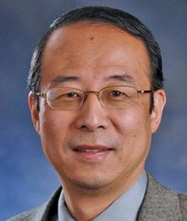

Tsinghua Electronic Information Alumni Forum (Shenzhen）
Invited Speakers

Yi Pan
Chair Professor and Dean
Fellow of AIMBE, RSPH, IET, and JSPS，and Foreign Member of AESU.
Shenzhen Institute of Advanced Technology, Chinese Academy of Sciences
Title:
AI in Medical and Biological Engineering
Abstract:
Artificial Intelligence (AI) is the science of mimicking human intelligences and behaviors.
Machine Learning (ML), a subset of AI, trains a machine how to use algorithms or statistics
to find hidden insights and learn automatically from data. Deep learning (DL) is one of machine
learning methods where we use deep neural networks with advanced algorithms such as auto-encoding
or convolution to recognize patterns in data. AI has become very successful recently due to the
availability of huge data and powerful supercomputers. Many applications such as speech and face
recognition, image classification, natural language processing, bioinformatics, health informatics
such as disease prediction and detection suddenly took great leaps due to the advance of AI.
Although various AI architectures and novel algorithms have been invented for many bio and health
applications, better explainability, increasing prediction accuracy and speeding up the training
process are still challenging tasks among others. In this talk, I will outline recent developments
in AI research for bioinformatics and health informatics. The topics discussed include proposing
more effective architectures, intelligently freezing layers, gradient amplification, effectively
handling high dimensional data, designing encoding schemes, mathematical proofs, optimization of
hyper-parameters, effective use of prior knowledge, embedding logic and reasoning during training,
result explanation and hardware support. These challenges create a huge number of opportunities
for people in both computer science and health care. In this talk, some of our solutions and
preliminary results in these areas will be presented and future research directions will also
be identified.
Bio:
Dr. Yi Pan is currently a Chair Professor and the Dean of Faculty of Computer Science and Control
Engineering at Shenzhen Institute of Advanced Technology, Chinese Academy of Sciences, China and
a Regents’ Professor Emeritus at Georgia State University, USA. He served as Chair of Computer
Science Department at Georgia State University from 2005 to 2020. He has also served as an Interim
Associate Dean and Chair of Biology Department during 2013-2017. Dr. Pan joined Georgia State
University in 2000, was promoted to full professor in 2004, named a Distinguished University
Professor in 2013 and designated a Regents' Professor (the highest recognition given to a faculty
member by the University System of Georgia) in 2015.
Dr. Pan received his B.Eng. and M.Eng. degrees in computer engineering from Tsinghua University,
China, in 1982 and 1984, respectively, and his Ph.D. degree in computer science from the
University of Pittsburgh, USA, in 1991. His profile has been featured as a distinguished alumnus
in both Tsinghua Alumni Newsletter and University of Pittsburgh CS Alumni Newsletter. Dr. Pan's
current research interests mainly include bioinformatics and health informatics using big data
analytics, cloud computing, and machine learning technologies. Dr. Pan has published more than
450 papers including over 250 journal papers with more than 100 papers published in IEEE/ACM
Transactions/Journals. In addition, he has edited/authored 43 books. His work has been cited
more than 16000 times based on Google Scholar and his current h-index is 82. Dr. Pan has served
as an editor-in-chief or editorial board member for 20 journals including 7 IEEE Transactions.
Currently, he is serving as an Associate Editor-in-Chief of IEEE/ACM Transactions on Computational
Biology and Bioinformatics. He is the recipient of many awards including one IEEE Transactions
Best Paper Award, five IEEE and other international conference or journal Best Paper Awards, 4
IBM Faculty Awards, 2 JSPS Senior Invitation Fellowships, IEEE BIBE Outstanding Achievement Award,
IEEE Outstanding Leadership Award, NSF Research Opportunity Award, and AFOSR Summer Faculty
Research Fellowship. He has organized numerous international conferences and delivered keynote
speeches at over 60 international conferences around the world.
Abstract:
In this presentation we will introduce the applications of radar sensing techniques in assisted
living. Some examples of radar localization and tracking of human objects, radar classification
of human activities, radar recognition of hand gestures, and radar detection of breathing
disorder will be presented. The trends of radar sensing in assisted living will also be discussed.
Bio:
Gang Li received the B.S. and Ph.D. degrees in electronic engineering from Tsinghua University,
Beijing, China, in 2002 and 2007, respectively. Since July 2007, he has been with the Faculty of
Tsinghua University, where he is currently a Professor with the Department of Electronic
Engineering. From 2012 to 2014, he visited Ohio State University, Columbus, OH, USA, and Syracuse
University, Syracuse, NY, USA. He has authored or coauthored more than 170 journal and conference
papers. His research interests include radar signal processing, distributed signal processing,
remote sensing, and information fusion. He is the author of Advanced Sparsity-Driven Models and
Methods for Radar Applications (London, UK: SciTech Publishing, 2020). He is an Associate Editor
for the IEEE TRANSACTIONS ON SIGNAL PROCESSING and was the Guest Editor for the IET RADAR SONAR
AND NAVIGATION and DIGITAL SIGNAL PROCESSING. He is a recipient of the National Science Fund for
Distinguished Young Scholars of China and the Royal Society Newton Advanced Fellowship of United
Kingdom. He is the Fellow of the IET.
Title:
High accuracy indoor positioning technology and its application
Abstract:
Beidou and other satellite positioning technologies are becoming more and more mature.
By 2035, China will build a more ubiquitous integrated positioning system based on Beidou.
Due to the limitation of indoor application of satellite positioning technology, high accuracy
indoor positioning technology is still a big challenge to build this ubiquitous positioning
system. Focusing on high-precision positioning technology, this presentation focuses on BLE
AOA and ranging technology and its application for massive Bluetooth-based devices.
Bio:
Zhou Jing, 33, is a bachelor and master of electronic engineering from Tsinghua University.
Former product and Internet of things expert of TP-LINK, responsible for MiFi / security camera
related product planning. Familiar with Bluetooth / WiFi / 4G / 5G / UWB and other wireless
communication protocols, proficient in software defined radio design. Currently, he is CTO of
CoreAIoT, responsible for product planning and R & D.
Title:
Processing Paradigm of “Sensing with Computing” in Analog Domain and its Continuous Perception IC
Abstract:
Intelligent Internet of Things technology is an inevitable product of the rapid development of
artificial intelligence technology and Internet of Things technology. The design and implementation
of integrated Internet of Things nodes with continuous intelligent perception capabilities is the
promising way for various terminal devices to achieve intelligence, and it is also the solution to
the current Internet of Things, which are the key technologies for reducing system power
consumption, real-time performance, security and privacy. This article reviews the emerging
"Senputing Architecture, Sensing with Computing" including system architecture and the new
paradigm of integrated circuit design for intelligent continuous perception. First, the intelligent
visual perception integrated system is the breakthrough point. The goal is to integrate artificial
intelligence under the new processing architecture. The processing task is closely integrated with
the visual sensor to realize an ultra-low-power intelligent visual acquisition and analysis chip
that can work continuously, and expand to a variety of perception modes such as auditory perception
and tactile perception. This presentation will introduce the multi-dimensional scalable exploration
method of emerging "Senputing Architecture" for intelligent continuous sensing, the design method
of high-energy-efficiency "Sensing + computing in Memory" mixed-signal integrated circuit chip,
and the software and hardware codesign ideas to solve various non-ideal factors of mixed-signal
architecture and circuits, to improve the performance and reliability of low-power smart chips.
Bio:
Fei Qiao is currently the group leader of iVip Lab (integrated Vision, intelligent perception),
Dept. of EE, Tsinghua University. His research interests are low power CMOS circuits design for
multimedia sensor network, and integrated intelligent perception chips, including visual, auditory
and tactile smart sensing. Fei’s group has published conference and journal papers, including
ISSCC, DAC, ICCAD, ISLPED, IROS, ICRA, and TCAS-I, TCAS-II, TVLSI, TC, TCAD. Additionally, the
iVip group have been granted for about 30 patents.
Abstract:
Seetrum’s chip-scale hyperspectral sensor integrates metasurface technology and wide-spectrum
dispersion characteristics and includes a novel algorithm framework. Compared with commercialized
spectrometers, we have miniaturized the bulky and expensive spectrometer to only 1% of its size and
cost, with an outstanding spectral resolution of 0.8 nm. Compared with leading researches worldwide,
our achievement features smaller spectral pixel, higher spectral resolution, and wider spectral
range. However, the most important advantage is that our technology is perfectly compatible with
the CMOS process, making massive and cheap production available. Our technology was reviewed by the
international top journal “Science” this year and listed as the latest research achievement in this
field. Seetrum would lead the expensive hyperspectral sensing to our daily life and make spectral
sensing everywhere.
Seetrum is committed to providing advanced spectral chips, AI algorithms, and intelligent sensing
solutions, empowering the industries and supporting our customers' efficient development. We are
a high-tech company that originated from Tsinghua University. We have innovated a snapshot CMOS
hyperspectral imaging chip with high resolution, low cost, and massive production ability, which
will expand sensing applications in smartphone, medical device, machine vision, AR, autopilot,
smart city, etc. We are making spectral sensing everywhere.
Bio:
Yu Wang co-founded Beijing Seetrum Technology Co., Ltd., which focuses on CMOS spectral chips,
in 2020. He has many years of experience in R & D, technology and management in the nano optics
industry. Wang Yu graduated from the Department of Electronic Engineering of Tsinghua University
in 2017 with a doctorate. During the semester, he published 5 SCI papers and 4 EI papers as the
first author, and won Tsinghua Special Scholarship. From 2017 to 2020, Wang Yu worked in Everbright
Securities Asset Management Co., Ltd. as a researcher/assistant investment manager in the
electronics industry.
Algorithm Director & General manager of subsidiary
Pudu Technology
Title:
AI & Learning Theory in Service Robotics
Abstract:
This talk will discuss the global development of service robot and highlight Podutech’s work
in developing robot products based on learning theory.
Bio:
Liu yunhang received his master's degree from Artificial Intelligence college, Beijing
University of Posts and Telecommunication. He is now working at Pudutech company, served
as the algorithm director and general manager of subsidiary. His research interests are
robot mobile technology and product development.